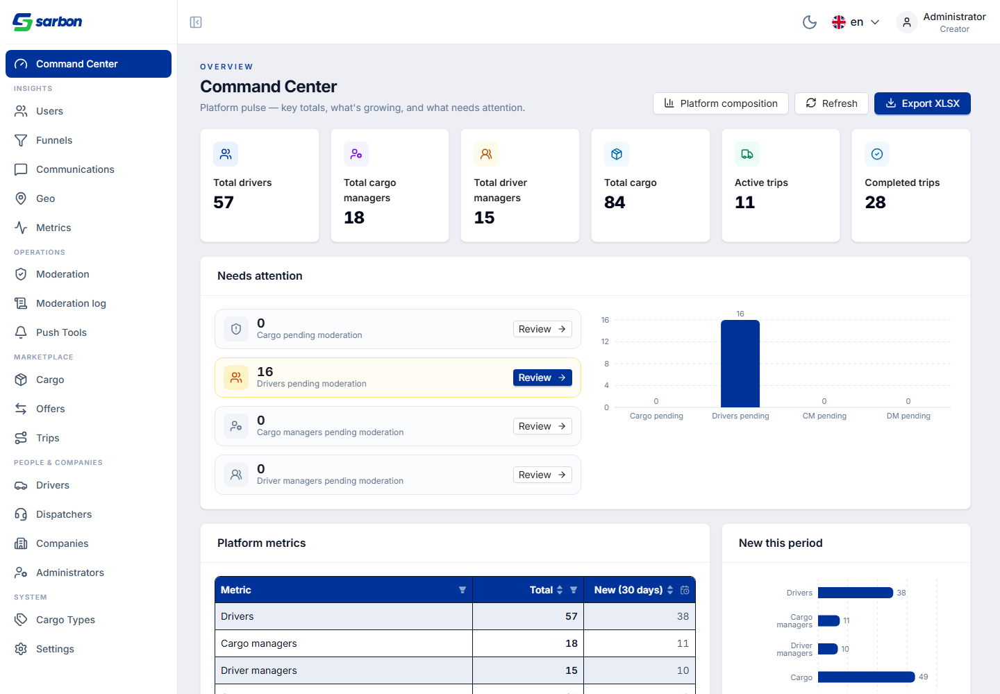
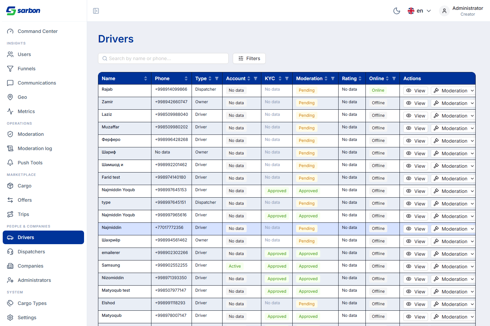
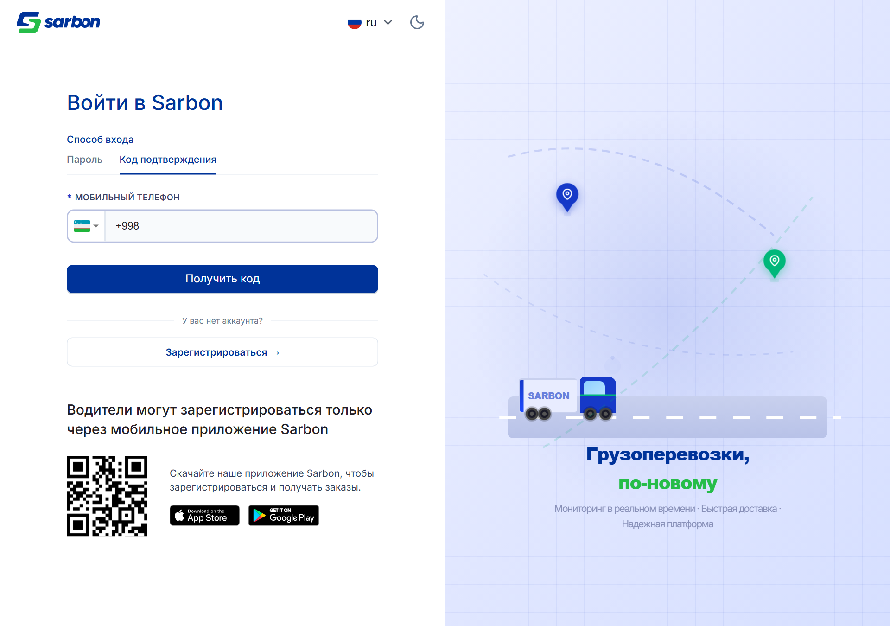
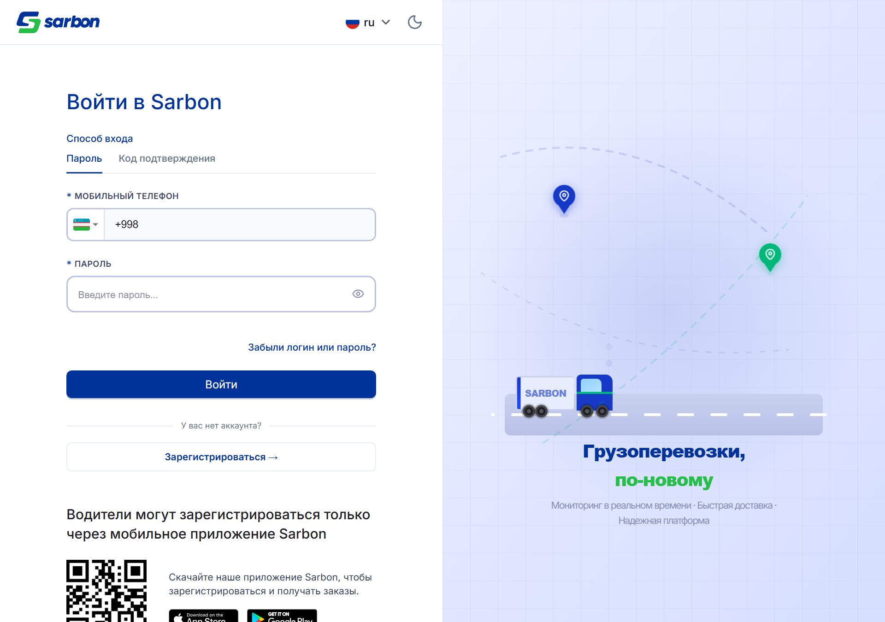
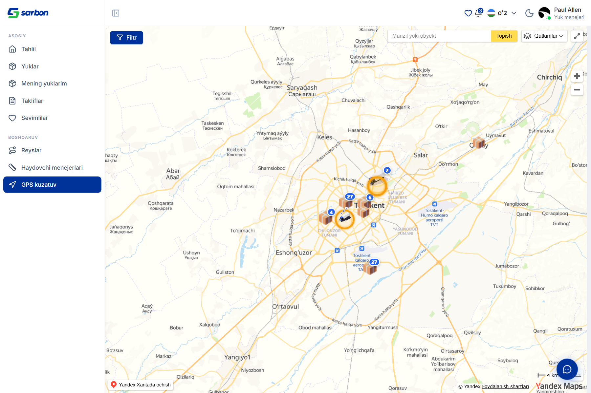
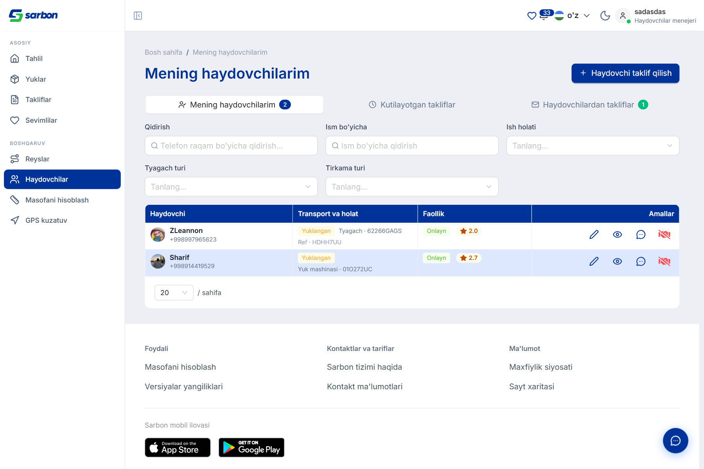

10.07.2026 — подготовка к пушу staging → main с крупной админ-работой. Command Center переработан: добавлена 6-я KPI-карточка «Всего грузов» (totals.cargo); блок «Тренд по времени» получил диапазон дат, показ/скрытие отдельных серий и горизонтальный скролл для широких окон; разрозненные секции «Platform pulse / Cargo breakdown / Role statistics» свёрнуты в единый Summary, где ~20 именованных метрик показаны counter-карточками в точном порядке для стейкхолдеров — каждая с полной «семьёй» (значение · рост% к предыдущему · среднее · рост среднего% · предыдущее), своим акцентным цветом и переключателем на мини-гистограмму (свой bucket день/неделя/месяц + диапазон). Заодно закрыты 3 живых визуальных бага (стилизация чипов-серий в свет/тёмной теме, лишний вертикальный скроллбар графика, календарь диапазона за соседней секцией из-за filter:blur-стекинга). В админ-списках диспетчеров/водителей — полный жизненный цикл модерации (resubmit из любого статуса, активация, inactive, блок с каскадом, разблок), ужатые действия строки, отдельная кнопка «Заблокировать», volcano-тег для заблокированных. Большие Excel-подобные списки переведены на двухрежимный загрузчик (useAdminPaginatedList): серверная пагинация по 50 строк при просмотре (мгновенный первый рендер) и загрузка всего — только при фильтрации/сортировке. На стороне менеджеров: GPS-карта показывает только своих водителей (+ на активных рейсах), поиск водителя ищет по имени или телефону (толерантно к формату). И release-prep флаги: вход — только по телефону (идентификатор Telegram/Email скрыт), страница AI-создания груза временно спрятана.
| Область | Что было / причина | Что сделано | Файлы |
|---|---|---|---|
| Админ — редизайн Command Center redesign закоммичено |
Панель была разбита на «Platform pulse / Cargo breakdown / Role statistics», метрики показывали лишь голое значение, не было KPI по грузам и контролов тренда. | 6-я KPI «Всего грузов»; «Тренд» — диапазон дат + показ/скрытие серий + горизонтальный скролл; единый Summary: ~20 метрик counter-карточками в порядке для стейкхолдеров, каждая — со «семьёй» (значение · рост% · среднее · рост среднего% · пред.), акцентным цветом и переключателем на гистограмму. Чистый tested summaryMetricConfig. | AdminCommandCenterPage.tsx, command-center/components/{summaryMetricConfig,AdminSummaryMetrics,AdminSummaryMetricCard,AdminMetricMiniTrend}, charts/{AdminTrendBars,commandCenterChartData}, summaryMetricConfig.test.ts, локали ×15 |
| Command Center — 3 визуальных фикса bug закоммичено |
Чипы-серии плохо читались в свет/тёмной теме; у графика был лишний вертикальный скроллбар; календарь диапазона рендерился за соседней секцией. | Чипы → кастомные пилюли, тонированные цветом серии (useAdminChartTheme); добавлен overflow-y-hidden (скролл только по горизонтали); getPopupContainer=()=>document.body для RangePicker (Framer filter:blur создавал стекинг-контекст, ловивший поповеры). | AdminCommandCenterPage.tsx, charts/AdminTrendBars.tsx |
| Админ — жизненный цикл модерации диспетчеров/водителей feature закоммичено |
Действия строки были разрозненны; не хватало полного цикла статусов доступа. | Полный lifecycle: resubmit из любого статуса, активация, inactive, блок с каскадом, разблок; ужатые действия строки (убрана Edit-модалка), отдельная кнопка «Заблокировать», volcano-тег для заблокированного статуса модерации. | AdminModerationActions.tsx, adminModerationRoutes.ts, AdminDispatchersPage.tsx, AdminDriversPage.tsx |
| Админ — серверная пагинация больших списков perf закоммичено |
Excel-подобные списки (водители, диспетчеры) грузили всё — десятки последовательных запросов страниц блокировали первый рендер. | Двухрежимный useAdminPaginatedList: просмотр → серверная пагинация по 50 строк (мгновенный первый рендер, тянется только текущая страница); фильтр/поиск/сортировка → загрузка всего датасета (чтобы фильтр охватывал все строки). Обе очереди всегда смонтированы — порядок хуков стабилен. | hooks/useAdminPaginatedList.ts (new), AdminDriversPage.tsx, AdminDispatchersPage.tsx, shared/table/Table.tsx |
| GPS — карта менеджера: только свои водители + поиск по телефону feature bug закоммичено |
Менеджер видел на карте весь автопарк; фильтр «Поиск по водителю» не искал по номеру телефона. | Cargo/Driver-менеджеры видят только своих водителей (свои + на активных рейсах), не весь автопарк; фильтр Select ищет по имени или телефону, сравнивая номер и «как есть», и digits-only («+998 90 123» находит «99890123»). | GpsTrackingPage.tsx, gps-tracking/hooks/useGpsMarkersData.ts, GpsFilterSidebar.tsx, utils/driverOptionFilter.ts (new) |
| Вход — упрощён до телефона (release-prep) flag закоммичено |
Переключатель идентификатора Telegram/Email не нужен на релизе, пока email-контур не готов end-to-end. | EMAIL_AUTH_ENABLED=false прячет segmented-переключатель идентификатора — остаются только табы способа (Пароль / Код) над единым телефонным полем; бэкенд/хелперы email не тронуты. Аналогично AI_CARGO_CREATE_ENABLED=false прячет AI-создание груза. | constants/featureFlags.ts (new), LoginPage.tsx, MyCargosActionBar.tsx, RootRouter.tsx |
| Админ — i18n-аудит summary-вью bug закоммичено |
В summary-вью админки (users / communications / geo / metrics / moderation) оставался захардкоженный английский. | Захардкоженные строки заменены на ключи локалей во всех перечисленных summary-вью; синхронизированы недостающие ключи. | admin/{communications,metrics,moderation,users}/**/Admin*SummaryView.tsx, локали ×15 |
Работа влилась в main двумя merge-коммитами. Технические записи — в bug.md (записи 2026-07-10 с 14:10 до 17:47).
Все скриншоты — реальные, сняты Playwright/Chromium против живого staging-бэкенда. Роли: Admin (/admin), Cargo Manager +998994878460, Driver Manager +998998809935. Скрипты — в папке отчёта.






| Артефакт | Путь |
|---|---|
| Журнал работ дня (записи 10.07) | bug.md (2026-07-10 · 14:10 · 14:40 · 14:45 · 15:17 · 16:20 · 17:30 · 17:47) |
| Краткая сводка для PM (Excel) | daily-report/10.07.26/report-10.07.26.xlsx |
| Command Center + Summary-карточки | src/pages/admin/command-center/** · charts/AdminTrendBars.tsx |
| Серверная пагинация админ-списков | src/hooks/useAdminPaginatedList.ts · AdminDriversPage.tsx · AdminDispatchersPage.tsx |
| GPS «только свои» + поиск по телефону | src/pages/gps-tracking/** · src/utils/driverOptionFilter.ts |
| Release-prep флаги | src/constants/featureFlags.ts · LoginPage.tsx · RootRouter.tsx |
| Скриншоты (живые, авторизованные) + capture-скрипты | daily-report/10.07.26/img/ · capture-10-public.cjs · capture-10-admin.cjs · capture-10-command-center.cjs · capture-10-managers.cjs |
| Отчёт предыдущего рабочего дня | daily-report/09.07.26/ |